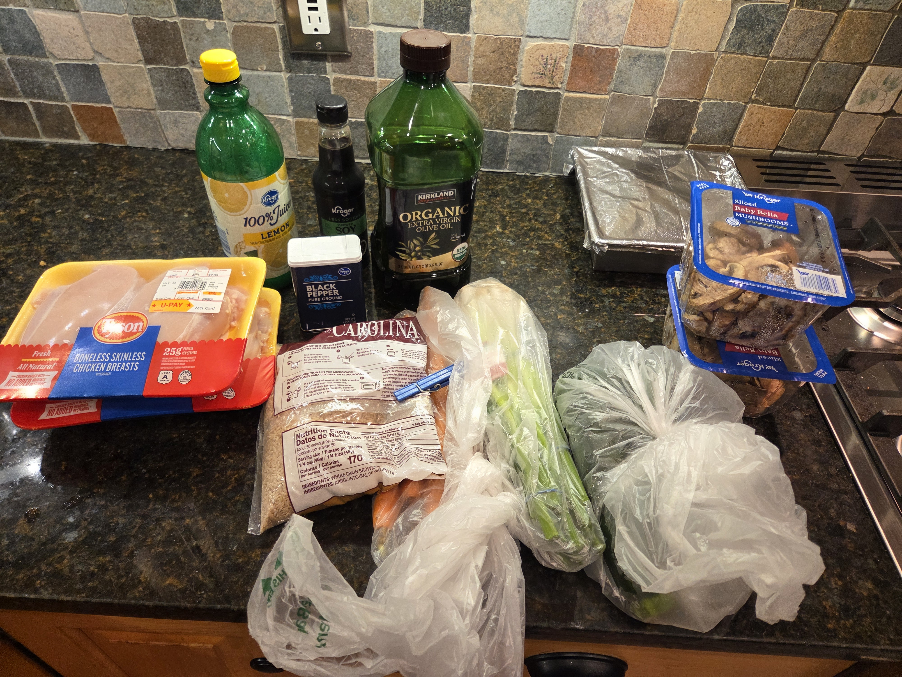
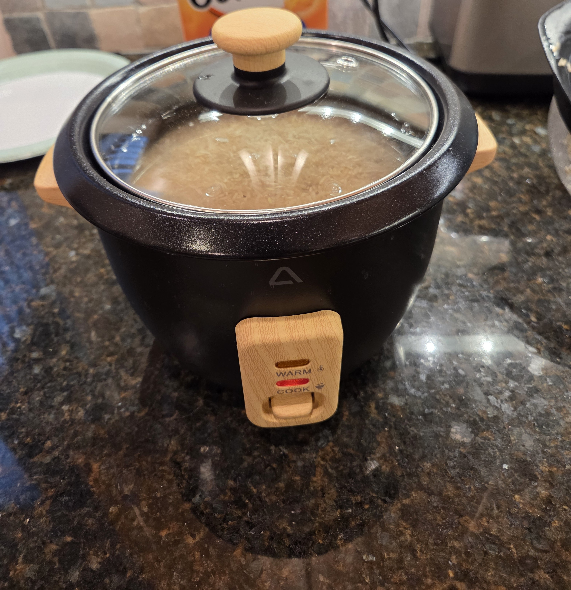
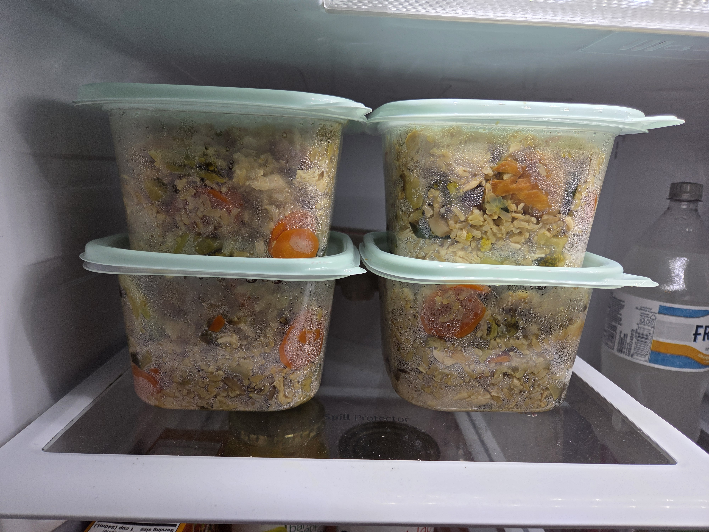
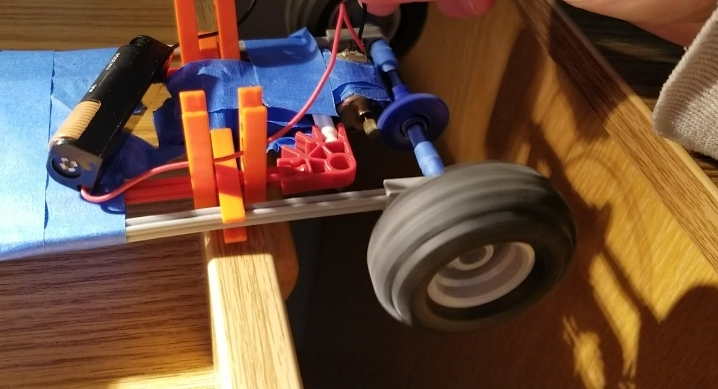
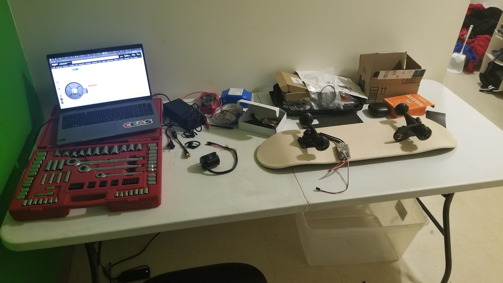
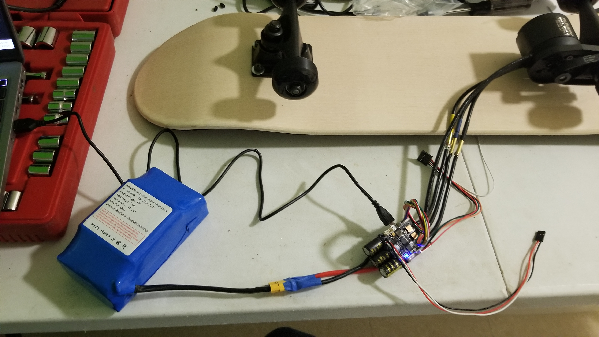

The inspiration for this experience came from the previous semester when I had already been working out with my friend and had been trying to eat healthier by cutting out sugar. I needed a strong, disciplined routine I could implement during my time co-oping up in Maine during winter and spring 2026.
For fitness and workouts, I purchased a monthly Planet Fitness membership in early January, and regularly attended the gym. My friend had previously taught me proper lifting techniques and safety measures for a variety of workouts. He recommended the 5x5 workout, where 3 times a week, you can select 3 of 5 different lifting exercises and do 5 sets of each. The exercises were deadlift, overhead press, squat, rows, and bench press, all utilizing a barbell with disc weights. I aimed to attend the gym 3 times every week for an hour after work, mixing up the exercises I selected each time. continued to serve as a mentor for this experience.
For dieting and meal prep, I spent several hours meticulously researching healthy, low-cost, and nutritious food ingredient options that would still allow me to build muscle and expend plenty of calories during my workouts. The goal was also to streamline the food types for each week, so I could prepare everything on one day of the week and have it ready to go. For my main meals, I opted to go for brown rice, cooked and then fried with diced chicken breast, zucchini, carrots, mushroom, and green onion, along with garlic salt, olive oil for greasing the pan, lemon juice for flavor, and plenty of low-sodium soy sauce. These were consumed daily for many months: at work for lunch, and in the evening for dinner. In addition to this I prepared side salad containers every week, with romaine lettuce heads, black olives, banana peppers, cucumbers, carrots, olive oil, balsamic vinegar, and black pepper (and hot sauce, sometimes). I drank water, milk, coffee, and tea, and avoided any sugar or bread.
In total the experience was around 110 hours. I noticed many benefits from this experience, both on the food and workout side. Headaches were less frequent, mood and energy levels improved significantly, and digestion improved. The biggest obstacles I faced during the routine were purely mental: making myself go to the gym and eat the food even though I didn't always want to. I also had to set aside enough time to prepare food every week and clean up afterwards to keep the kitchen spotless.
In summary, this experience taught me more about discipline and how important it is to prioritize healthy habits. They carry a ripple effect that can boost our mood, our work ethic, our productivity, and focus. All these things help me become a better global citizen scholar and ensure I can do the best job possible to improve the quality of life for others. While my former definition of a global citizen scholar remains: someone who fails, I would like to add a piece to it: someone who is well-disciplined. Through discipline, we become more resilient to the absolute hardest of tasks, which otherwise would feel immovable. These immovable tasks are the toughest of engineering and economic problems that still need solving.
I chose a photograph representation of this experience because it’s a quick glance and easy for anyone to understand what I worked on, and highlights different aspects of the process.



The idea for this experience began when I noticed how many people were travelling on electric skateboards and scooters around campus. Already having a deep passion for innovation and mechanical engineering, I thought it would be really fun to research and build my own high-quality (but affordable) electric skateboard from scratch. I began the project on a very small scale, testing small motors and parts I already had, and designing small electric motorized vehicles to familiarize myself with basic systems that functioned similarly. During this time, I also began studying electric skateboards online extensively, learning what components were needed, and shopping for parts.
Eventually, after I felt I had thoroughly searched for the best deals, I began ordering everything needed for the first rideable prototype. This included the lithium ion battery and battery charger, skateboard deck and grip tape, motor, belt and pulley system, wheels and trucks, speed controller, and some other essential electrical components. In total, the components ended up being fairly cheaper than I thought, and well within budget. However, some components simply weren’t compatible, and needed to be returned. Others could be kept, but needed significant modifications. For instance, I had to use a tin hacksaw to file down the aluminum skateboard trucks in order to get the motor mount to successfully fit. The most challenging aspect of the experience though was troubleshooting electrical components.
In summary, this experience taught me more about troubleshooting and how important it is to check for the most easily-solvable problems first, realism in setting and achieving goals, and the economic viability of electric skateboards. All these things drastically influenced my definition of a global citizen scholar: someone who fails. By failing, we learn to optimize the processes by which we take risks; risks that, as engineers or entrepreneurs, can create incredible value for other people’s lives.
I chose a photograph representation of this experience because it’s a quick glance and easy for anyone to understand what I worked on, and highlights different aspects of the process.


